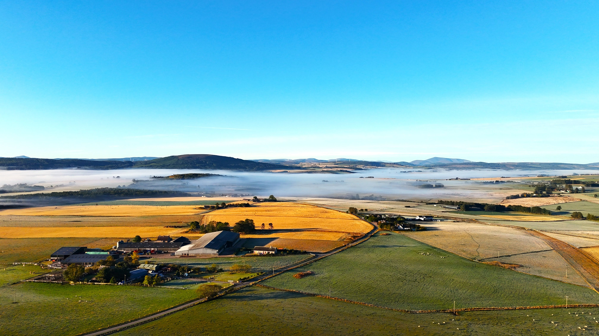
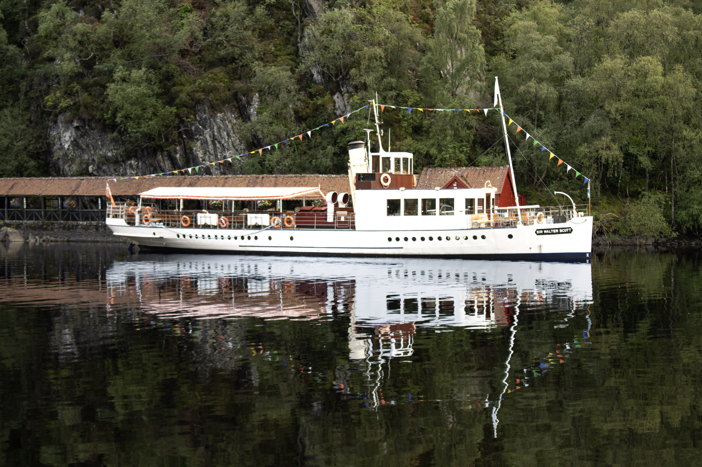
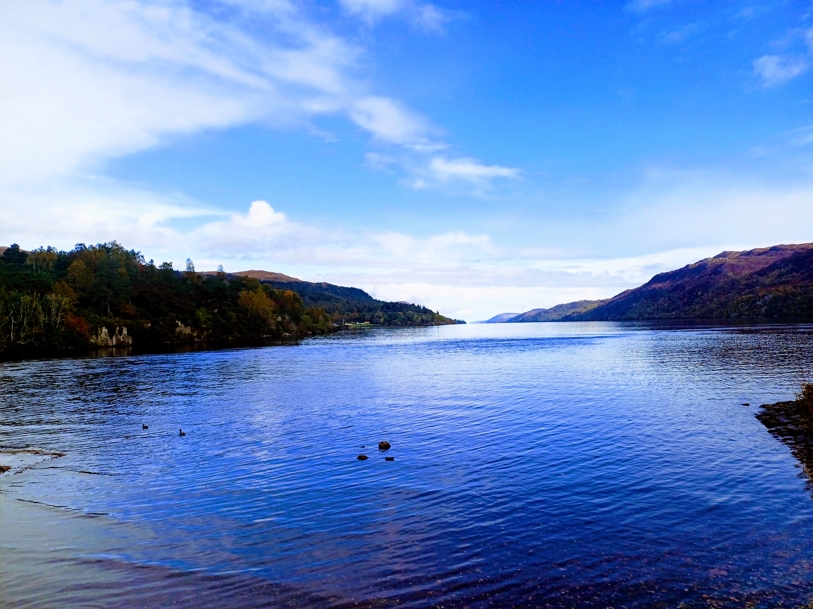
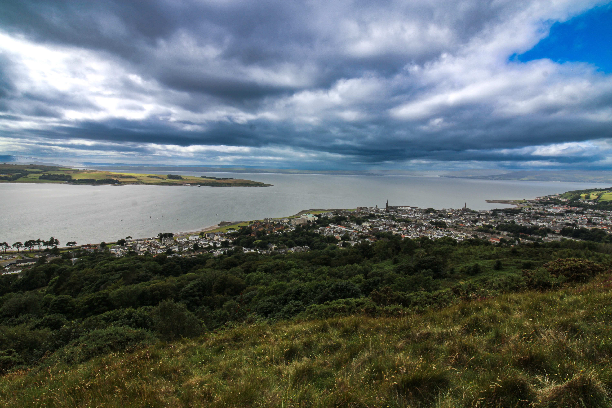
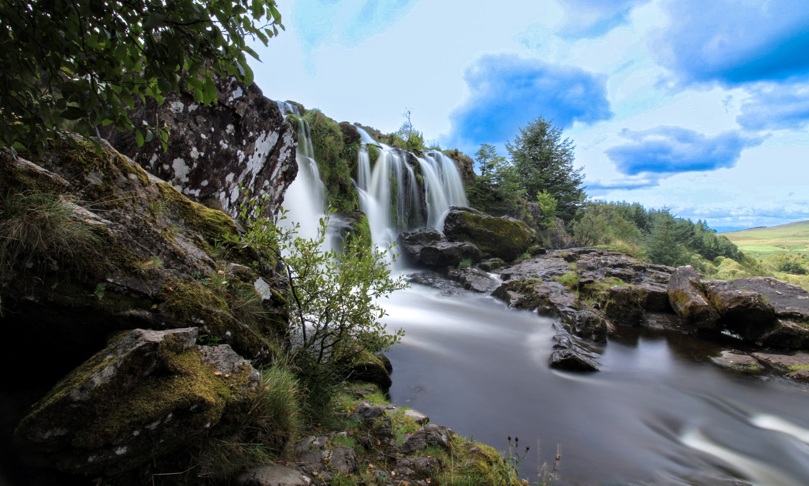

Photography
Landscapes, buildings and closer observations.
Photographs collected while travelling around Scotland, from open landscapes and historic buildings to the smaller textures and details found along the way.





More of my photography can be found on Flickr.
Visit my Flickr photostream